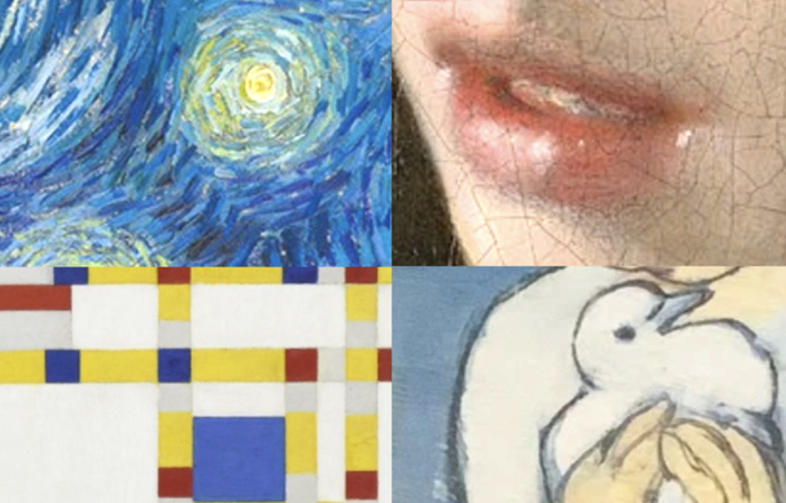

Aan het laden...

Cursus Kunstgeschiedenis
Inhoud van de cursus
Onderwerpen of thema’s: een kunststroming, een onderwerp, een kunstenaar, een actuele tentoonstelling. Meestal binnen één bijeenkomst afgerond. Over de kunstgeschiedenis, maar ook over de kunstbeschouwing: hóe kijk je naar kunst, naar het gebruik van kleur, vorm, materiaal, licht en ruimte.
Locatie
Praubstraat 21
Zwolle Centrum
Tijden
Dinsdagochtend van 10u tot 12u.
Dinsdagmiddag van 14:30u tot 16:30u.
(Er zijn plannen voor een avondgroep, maar nog niet genoeg deelnemers.)
Kosten
Per keer 15,- euro. De eerste keer gratis, om de sfeer te proeven. Er is koffie en thee. Een keer een bijeenkomst overslaan is prima.
Algemene informatie
Ik heb een groot beeldscherm en maak gebruik van PowerPoint, het atelier is groot genoeg voor max. 12 personen, prettig van sfeer, met goede stoelen. (Wel twee trappen op).
De groepen lopen inhoudelijk synchroon, zodat deelnemers dan de mogelijkheid hebben om een keer op een ander dagdeel te komen.
In vakanties slaan we die keren over, in overleg met elkaar.
De eerste groep is gestart in 2012.
Over mij
Ik heb kunstacademie gedaan (afdeling schilderen, afgestudeerd in 1992) en de eerstegraads lerarenopleiding (afgestudeerd in 2001). Ik teken en schilder, en werk de laatste paar jaar met name aan een beeldverhaal.
De bijeenkomsten zijn inhoudelijk goed en gedegen (als ik dat zelf zo mag zeggen...), maar evenzo houd ik ervan om e.e.a. met humor ook wat luchtigheid te geven. De sfeer in elk van de groepen is heel goed, gezellig ook.
Ik hoor vaak van deelnemers dat ze door de cursus niet alleen meer over kunst te weten komen, maar ook met een andere blik in musea rondlopen, en: sowieso anders om zich heen gaan kijken. Dat laatste vind ik eigenlijk het mooist…
Vriendelijke groet,
Mari Boer